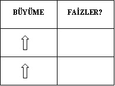
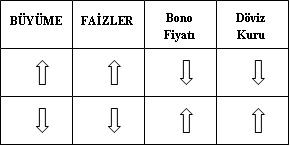
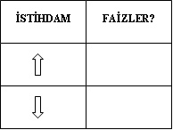
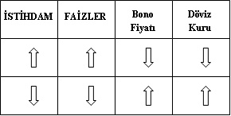
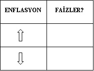
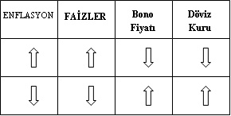
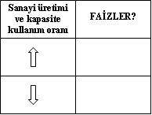
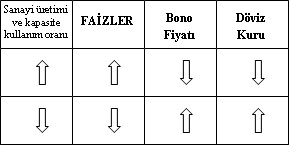
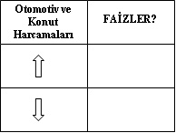
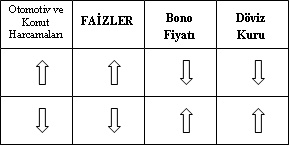

MAKROEKONOMİ
Ekonomiyi bir bütün olarak inceleyen ve ekonominin parasal kesimi ile reel kesimini hem ayrı ayrı hem de birbirleriyle ilişkileri açısından inceleyen bir alt daldır.
Buna göre reel tarafta;
• toplam üretim,
• toplam talep,
• istihdam,
• enflasyon,
• ...
Parasal tarafta ise;
• para arzı,
• para talebi,
• faiz,
• kur,
• ...
gibi değişkenler incelenmektedir. İşin zorluğu ise bu değişkenlerin hemen hiçbir zaman düzenli ve istikrarlı bir etkileşim içinde bulunmadıkları gerçeğidir.
Biz bu bölümde, okuyucunun basından rahatlıkla takip edebileceği değişkenleri inceleyeceğiz. Ayrıca bu verilere düzenli bir biçimde Türkiye İstatistik Kurumu’nun (TÜİK) internet sayfasından da ücretsiz ve detaylı olarak ulaşılabilir.
Bu bölümde böylesi değişkenlerin nasıl yorumlanabileceği tartışılacaktır.
ANALİZ ÖNCESİ TEMEL VARSAYIMLAR
Makroekonomi ve makroekonomik göstergelerin yorumlanması oldukça ciddi bir konudur. Bu bölümdeki varsayımların ve analizlerin hakkıyla anlaşılabilmesi için temel bir ekonomi bilgisine sahip olmak gerektiğini belirtmek isteriz. Bu şerhimiz saklı kalmak kaydıyla, biz yine de herkesin anlayabileceği bir basitlikte durumu aktarmayı deneyeceğiz.
Öncelikle, bu göstergelerin yorumlanabilmesi için her ülkede ve her konjonktürde geçerli olması mümkün olmayan birtakım varsayımlarda bulunmak ve bunları peşinen kabullenmek gerekmektedir. Güçlü ekonomi teorisi alt yapısına sahip arkadaşlarımız, dönemine göre uygun varsayımları kendileri üretebileceklerdir. Böyle olursa kitabın bu bölümü güncelliğini on yıllarca sürdürebilir. Öte yandan, biz mecburen mevcut durumu ifade eden varsayımlarda bulunabileceğiz. Bizim kullanacağımız ya da benzeri başka bir varsayım seti olmadan birtakım analizler yapmak neredeyse olanaksızdır. Bu özel varsayımların yanı sıra birtakım, “temel durumlar” da mevcuttur.
Özel varsayımlar, bir sonrakine sürekli ön şart olan bir sıralamayla şöyle tanımlanabilirler:
1. Ekonomi ile ilişkili olarak açıklanan her veri analiz edilemez. Yalnızca “sıra dışı” veriler analiz edilmelidir. Tam da “beklentiler doğrultusunda” gelen bir veri size yönlendirici bir sinyal vermez. O hâlde dikkat edeceğimiz veriler, tahminlere ya da trende ters düşen verilerdir.
2. Gelen “sıra dışı” verilerin nedeni “iç talep”tir.
3. “İç talep”in aşırı yüksek olması, ekonomide yüksek enflasyonist bir ortam yaratacaktır. Tam tersine aşırı düşük talebin olduğu bir ortam ise ekonomiyi durgunluğa götürebilecektir. Bu durumların her ikisi de tehlikelidir.
4. Ekonomik sistem içinde, enflasyon seviyesini kendisine “görev” edinmiş olan oyuncu Merkez Bankası’dır. Elindeki silah ise “faiz”dir.
5. O hâlde; “sıra dışı veri”nin söylediği şeyi yönetebilmek için Merkez Bankası, faizleri indirecek ya da arttıracaktır. Elbette söz konusu faiz ayarlaması günlük bir şey değildir, olamaz da. Yani her veri değişikliğinde sürekli Merkez Bankası’nın faizlerle oynaması beklenemez. Ancak verilerin bir trend dâhilinde ve tehlikeli bir biçimde gelişmesi durumunda da önlem olarak orta ve uzun vadede, faizlerde bir hareket beklenmelidir.
Bu temel varsayım listemizin ardından “temel durum”lardan bahsedelim. Bunlar da şöyle sıralanabilir:
1. Piyasada pek çok faiz vardır (bono faizleri, MB gecelik faizleri, mevduat faizleri vs.). Ancak bunlar, genellikle birlikte hareket ederler ve zaman içinde yakınlaşırlar. O hâlde Merkez Bankası’nın bir faiz hareketine paralel olarak ve o yönde diğer tüm faizlerde, yani faiz hadlerinde bir hareket beklenmelidir.
2. Faiz oranları ile SGMK fiyatları ters yönlüdür (önceki bölümlerde tartıştığımız üzere).
3. Faiz oranları ile kurlar ters yönlü hareket ederler (önceki bölümlerde tartıştığımız üzere).
Varsayım listemiz ve temel durumların bir kısmı “her dönem” ve “her ekonomi” için geçerli değildir. Ancak yine de ülkemizdeki durumu normal şartlar altında incelerken işimizi kolaylaştıran ve gerçekçi öngörülerde bulunabilmemize olanak tanıyacak varsayımlardır.
ANALİZE DAİR...
“Varsayım” ve “temel durum”ları inceledikten sonra, sıra analizde. Peki nasıl analiz yapacağız?
Aslında analizin süreci, varsayımların süreciyle aynı. Buna göre analiz şöyle yapılacak:
1. İlk aşama, analizin en zor bölümü. Burada “sıra dışı değişken”in ekonomiyi ne yönde etkileyeceğini saptamak gerekiyor. Acaba bu durum ekonomiyi müdahale etmeyi gerektirecek kadar “ısıtıyor” mu, yoksa neredeyse “durduracak kadar” yavaşlatıyor mu?
2. Yukarıdaki her iki uç durum da “kabul edilemez” olarak değerlendirilir ise, sıkıntının aşılabilmesi amacıyla, ekonomiyi yönetenler tarafından faizlerde bir değişiklik beklenecektir.
3. Faizlere yapılacak herhangi bir müdahale (arttırma ya da düşürme) piyasadaki tüm faiz hadlerini benzer yönde etkileyecektir.
4. Ekonominin aşırı “ısınmış” olduğu düşünülüyor ise, talebin kırılması için bir faiz artışı gündeme gelebilir. Öte yandan, bir yavaşlama, hatta daha da kötüsü bir “durgunluk” sinyali alındığında ise ekonomiyi yeniden canlandırmak için faiz indirimi beklenebilecektir.
5. Genel faiz seviyesindeki değişim, kur seviyesini ve SGMK fiyatlarını da ters yönlü olarak etkileyecektir.
Özetle, “sıra dışı değişken”in normalize edilmesi yönünde nasıl bir düzenleme geleceğini tahmin edebilirsek gerisi “çorap söküğü” gibi geliyor. (Siz bakmayın böyle karışık anlatılmasına, kitabın yazarı biraz zayıf sanırım.)
BÜYÜMENİN ANALİZİ
Bir ekonominin büyümesi iyidir. Ekonomilerin düzenli bir biçimde büyümesi tercih edilir. Hatta iktisatçılar tercih edilen büyümeyi “sürdürülebilir büyüme” olarak tanımlar. Bu tanım, ülkede enflasyonist baskı yaratmadan ve yıllar itibarıyla benzer oranda sürdürülebilecek en yüksek büyüme oranını ifade edecektir. Ülkemizde büyüme rakamları 3 ayda bir yayımlanmaktadır.
Buna göre, ülkelerin yüksek hızlarda büyümeleri arzu edilmektedir. Ancak bunun ön şartı, takip edilen yıllarda da benzer oranlarda büyüme yakalanmasıdır. O hâlde, ekonominin küçülmesi bir sorun olduğu gibi, tahmin edilemez ve sürdürülemez oranlarda büyümesi başka bir sorun teşkil etmektedir.
Küçülen ekonomi, yavaşlamayı, iş hacminin daralmasını, işten çıkarmaları, dükkân kapatmaları ve genel refah seviyesinin düşmesi gibi sonuçlar yaratacağından sorun oluşturmaktadır.
Çok hızlı ve sürdürülemez bir hızda büyüyen ekonomi de önce pek çok insanın işe girmesi, borçlanması, harcaması, bunlara hizmet veren pek çok hizmet ve ticaret şirketinin açılmasını sağlayacaktır. Ancak takip eden dönemlerde büyüme hızı aynı düzeyde tutulamazsa bu kez, o işe giren, harcayan, borçlanan insanlar işten çıkarılacak, onlara hizmet vermek için açılan lokantalar kapanacak, artık büyümeye güvenmeyen işletmeler yeni yatırım planları yapmayacak ve ekonomik genişleme duracak, hatta savunmacı bir hâl alacaktır.
O hâlde büyüme süreci iyi analiz edilmeli ve aşırı büyüme ile küçülme olduğunda müdahale edilmelidir. Bu mantıkla aşağıdaki tabloya bakalım ve aşırı büyüme ve küçülme olduğunda, bu durumun çözümü için faizlerde ne yönde bir gelişme olabileceğini tahmin etmeye çalışalım:

Sizin de öngördüğünüzü umduğumuz gibi, aşırı büyümenin dizginlenmesi amaçlandığında, iç talebi kırmak için faiz hadleri yukarı çekilecektir. Bu durumda da SGMK fiyatları düşecektir. Yeterince yüksek YTL faizi olduğunu düşünen ve bu yüksek faiz haddinden yararlanmak isteyen piyasa oyuncuları da ellerindeki dövizi bozarak YTL’ye geçecekler, bu da dövizi gevşetecektir. Normal şartlar altında ve başka etmen olmadığı varsayılan durumdaki olası gelişmeler aşağıdaki tabloda özetlenmiştir:

İSTİHDAM
Çalışma şartlarını sağlayan ve çalışmak isteyenlerin bir işte çalışıyor olmasını tanımlayan istihdam, ekonominin en önemli göstergelerinden birisidir. Normal şartlar altında, ülkede çalışma yaşında olan ve çalışmak isteyen kişilerin olabildiğince yüksek bir oranına iş imkânı sağlanması esastır. Böylelikle insanlar gelir elde edecekler ve yaşamlarını idame ettireceklerdir. Bu kişiler gelirlerini harcayacaklarına göre bu durum, ekonominin işleyişini daha da hızlandıracaktır.
O hâlde istihdamın düşük olması (yani işsizliğin yüksek olması) doğal olarak istenmeyen ve engellenmesi gerekli olan bir durumdur. Öte yandan, kulağa garip gelebilir ama bir ekonomideki aşırı istihdam, yani herkesin işinin olması da ekonomi teorisine göre sağlıklı değildir.
Aşırı istihdam da ekonomide yeni işgücü lazım olduğunda sıkıntılarla karşılaşılması sonucunu doğuracaktır. Yeni işyeri açmak istiyorsunuz, ama çalışacak adam yok; çünkü herkesin işi var. Ya daha çok ödeyeceksiniz ve maliyetleriniz artacak ya da kalifiye olmayan kişileri işe almak zorunda kalacaksınız. Ayrıca –biraz fazla kapitalist bir yaklaşım olacak ama– çalışanların keyfi yerinde olacağına göre, iş anlamında kendilerini güvende hissedecekler ve fazla özverili ve verimli çalışmayacaktır keratalar. Ayrıca gelir seviyesi yükseleceğinden harcamalar ve devamında da enflasyonda bir artış beklenebilecektir.
Bu mantıkla aşağıdaki tabloya bakalım ve aşırı yüksek ve düşük istihdam hâllerinde, bu durumun çözümü için faizlerde ne yönde bir gelişme olabileceğini tahmin etmeye çalışalım. Aman dikkat! Yukarı yönlü ok, işsizlik değil, aşırı istihdam anlamına geliyor:

Mutlaka doğru yapmışsınızdır. (Saf saf, “Yoo yanlış yapmışım ben?” demeyiniz, fazla dürüst olmayalım lütfen.) Aşırı yüksek istihdam durumunun dizginlenmesi amaçlandığında, faiz hadleri yukarı çekilecektir. Bu hâlde de SGMK fiyatları düşecektir. Yeterince yüksek YTL faizi olduğunu düşünen ve bu yüksek faiz haddinden yararlanmak isteyen piyasa oyuncuları da ellerindeki dövizi bozarak YTL’ye geçecekler, bu da dövizi gevşetecektir. İşsizliğin yüksek olduğu (aşırı düşük istihdam) durumda ise, yeni işyerleri açılabilmesini ve yatırımları, kredi kullanımlarını rahatlatmak için faizlerin düşürülmesi beklenecektir. Normal şartlar altında ve başka etmen olmadığı varsayılan durumdaki olası gelişmeler aşağıdaki tabloda özetlenmiştir:

ENFLASYON VE ANALİZİ
Enflasyon, fiyatlar genel seviyesindeki artıştır. Ekonomi açısından enflasyonun belli bir düzeyde tutulması önem teşkil eder. Sıfır enflasyon hem hedeflenen bir şey değildir, hem de istisnai hâller ve dönemler haricinde beklenen bir durum değildir. Bununla birlikte, çok sınırlı sayıda da olsa dünya üzerinde negatif enflasyon durumunun yaşandığı da gözlemlenmiştir.
Enflasyonun hedefler çerçevesinde oluşmasını sağlamak, diğer bir ifade ile “fiyat istikrarını sağlamak” Merkez Bankası’nın görevidir.
Öte yandan, “sokaktaki adam” enflasyon kavramına pek inanmaz. “Enflasyon düşüyorsa niye her şeyin fiyatı artıyor?” der haklı olarak. Enflasyon oranı fiyat artışını ölçer. Buna göre “enflasyon düşüyor” demek, fiyatlar değil, “fiyat artış hızı” düşüyor demektir. Yani fiyatlar artmakta, ama daha yavaş artmaktadır.
Enflasyon sokaktaki insan gözüyle tek bir kavram olarak algılansa da teknik olarak türleri ve alt açılımları mevcuttur. Bunlar detaylı biçimde yine TÜİK’in internet sayfasından elde edilebilir. Ancak kitabımızın amacı dikkate alındığında, kolaylıkla elde edilebilir ve en temel özelliklere sahip enflasyon kalemlerinin incelenmesi esas olacaktır.
Ülkemizde enflasyon, Tüketici Fiyatları Endeksi (TÜFE) ve Üretici Fiyatları Endeksi (ÜFE) alt başlıkları ile incelenmektedir. Bunlar her ay başında bir önceki ayın gerçekleşmeleri üzerinden hesaplanmaktadır. Hesaplanmalarında çok değişik alt kalemlerden oluşan sepetlerdeki fiyat artışları dikkate alınmaktadır.
ÜFE temel olarak çeşitli yatırım ve tüketim mallarından oluşan sepetteki fiyat artışını göstermektedir. Endeks, üretici cephesindeki fiyat değişikliklerini içermektedir. Buna göre bir bakıma üreticinin maliyet artışını ifade etmektedir.
TÜFE ise, daha çok tüketici cephesindeki fiyat değişikliklerini ifade eder. Bu anlamda da hizmetler ve konut fiyatlarındaki artışlar ağırlıklı hâle gelmektedir.
O hâlde ÜFE üretici cephesindeki maliyetleri, TÜFE ise hane halkının giderlerindeki fiyat artışlarını ön plana çıkarmaktadır. Peki, ama bunları nasıl yorumlayacağız?
Bu konudaki temel yorum, enflasyonun hedeflerle uyumu çerçevesinde olacaktır. Buna göre enflasyonun hedeflerle uyumlu gerçekleşmesi beklenmektedir. Bu hâlde bir “sıra dışılık” olmadığına göre ciddi bir politika değişikliği beklememek gerekir. Öte yandan, enflasyonun aşırı yüksek olması durumunda, Merkez Bankası’ndan bunu engelleyici yönde birtakım hareketler beklenebilir. Elbette enflasyonun durgunluk sinyali şeklinde algılanabilecek düşük seviyesinde de tersi yönde bir müdahale beklenecektir.

Bu müdahaleler aylık sapmalarda değil, birkaç aylık bir gözlem zincirinin devamında beklenmelidir. Enflasyonda hedeften ciddi bir sapma trendi görülmesi hâlinde Merkez Bankası’nın faizler yönünde alacağı aksiyon diğer tüm faizleri de aynı yönde etkileyecektir. Peki, Merkez Bankası’nın hangi durumda nasıl bir hareket yapmasını beklersiniz?

Bölümün başında vermiş olduğumuz varsayım listemize göre, enflasyonun beklenenden yüksek çıkmasının ardında iç talep görünmektedir. Eğer bu varsayım geçerli ise, tehlikeli biçimde yükselen enflasyonu belli bir seviyede tutabilmek için iç talebi kırmak ve insanların daha fazla tasarruf yapmaya yönlendirilmesi gerekecektir. Bunun için de faizlerin yükseltilmesi beklenebilir. Yükselen faizler SGMK fiyatlarını ve kur seviyesini düşürecektir.
Enflasyon konusunda önemli bilgiler veren bir diğer detay da enflasyonun TÜFE mi, yoksa ÜFE tarafında mı ağırlıklı olduğunun incelenmesidir. Buna göre genel enflasyon seviyesi beklentilere uygun olsun ya da olmasın detay olarak ÜFE ve TÜFE rakamlarının birbirlerinden anlamlı düzeyde farklı olup olmadıkları da ayrı bir önem kazanacaktır. Bu noktada 1 aylık verilerin anlamlı olmayacağını bir kez daha belirtelim. Bahsedilen birkaç ay boyunca süren bir trend durumudur.
Enflasyonun tanımı yapılırken detayları verildiğinden, okuyucunun aşağıdaki tanımları yorumlaması beklenmektedir. Zira her şeyi devletten, pardon, yazardan beklememek gerekmektedir.
TÜFE > ÜFE ==> Talep Enflasyonu
TÜFE < ÜFE ==> Maliyet Enflasyonu
Talep enflasyonu durumunda, kişiler kendilerini mutlu hissetmekte, geleceğe güvenle bakmakta, para harcamakta ve kredi kullanmaktadır; ekonomide canlılık mevcuttur. Bu durumda, üreticilerin bu talep çılgınlığından yararlanmayı amaçlamaları ve fiyatlar genel seviyesinin bu yönde yükselmesi beklenebilir. Kontrolü, talebi kırmakla mümkün olabilir.
Maliyet enflasyonu ise biraz daha karmaşıktır. Sistemde talep canlılığı olmasa bile, üretici tarafındaki maliyetlerin artması sorun yaratacaktır. Üreticiler artan maliyetlerini bir süre için tüketiciye yansıtmasalar da bu durum sürdürülemez. Ya maliyetlerini gecikmeli olarak tüketiciye yansıtacaklar ve geriden gelen bir enflasyon dalgasıyla fiyatlar genel seviyesi artacaktır; ya da yansıtamıyorlar ise, dükkânı kapatacaklardır. Maliyet enflasyonu durumundaki felaket senaryosu da aslında budur.
SANAYİ ÜRETİMİ VE KAPASİTE KULLANIM ORANLARI
Bu noktaya dek, tüm yorumların paralel mantık üzerine kurulu olduğunu fark etmişsinizdir. Eğer bir parametre normalin altında ya da üzerinde ise, talebin kırılması ya da rahatlatılması gerekiyor. Bu da faizlerle oynanarak sağlanıyor.
Ülkedeki sanayi üretimi elbette hayatidir. Sanayi üretiminin bir önceki döneme göre belli oranda yükselmesi daima tercih edilecektir. Ancak bu artışın da makul seviyede olması arzu edilecektir. Eğer artış anormal düzeyde ise ve ekonominin aşırı ısınmış olduğu düşünülüyorsa bunun durdurulması gerekecek, tersi durumda ise faizler yoluyla talebin canlandırılması beklenebilecektir.
Sanayideki kapasite kullanım oranında da benzer yorumu yapmak mümkündür. Normal kapasite kullanım oranının % 80’ler seviyesinde olduğu düşünüldüğünde, bu değerin % 90’ları zorlaması aşırı yüksek kapasite kullanımı (ısınan ekonomi), % 70’leri test etmesi de aşırı düşük kapasite kullanımı (yavaşlayan ekonomi) olarak algılanacak ve orta ve uzun vadede faizlerde bu yönde hareket beklenebilecektir.
Siz sanayi üretimi ve/veya kapasite kullanım oranlarında böylesi sıra dışı gelişmeler yaşandığında, devamında faizlerde ne beklersiniz?

Her iki değişken için de yorumumuz paralel olacaktır. Ekonominin aşırı ısındığı düşünüldüğünde, iç talebi kırmak için faizleri yükseltmek gerekebilecektir. Bunun sonucunda da SGMK fiyatları ve döviz kurları düşecektir. Öte yandan, ekonomi yavaşladığında ve canlanma sağlanması için yönlendirme gerekliliği doğduğunda ise faizlerin düşürülmesi gündeme gelecek ve bu durumun SGMK fiyatlarını ve döviz kurlarını arttırıcı etki yapması beklenecektir.

OTOMOBİL VE KONUT TALEBİ
Ekonominin çarklarının dönmesi iyidir. Alım satım olması, ülkede yaşayanları da, ülkeyi yönetenleri de mutlu eder. Para döner, dükkânlar çalışır, üretim olur, insanlar kazanır, harcar ve mutlu olur. Ekonominin çarklarının dönmesi iyidir...
Bununla birlikte, tıpkı “sıra dışı” büyümenin bizleri “Acaba bu durum sürdürülebilir mi?” endişesine yönelttiği gibi, piyasalardaki anormal talep de benzer korkuları tetikler. Korkunun en yüksek perdede seslendirildiği yer de otomobil ve konut talebidir. Çünkü genellikle bu talep bir kredi “desteğinde” karşılanır. Yani insanların daha çok hamburger yemek için gösterecekleri talep (kiloları hariç) çok da tehlikeli görülmezken, uzun vadeli ve gelirlerinin çok üzerinde borçlar altına girerek bir otomobil ve konut talebi çılgınlığı yaşamaları yakından izlemeyi gerektirecek kadar hayatidir.
Her ne kadar otomobil ve konuta olan talebin benzer etkiler göstereceği ve benzer müdahaleler gerektirebileceği yönünde bir yorum mevcut ise de, aslında, her iki aracın da birbirlerinden oldukça farklı özellikleri mevcuttur.
Otomobile olan talep, ithal otomobiller ve ithal yarı mamul kullanan yerli otomobiller nedeniyle ithalat patlaması da yaratacaktır. Bu durum, beraberinde dış ticaret açığı ve cari açık gibi sorunlar da yaratabilecektir.
Konuta olan talebin etkileri konusunda en iyi örnek ise ABD’dir. ABD’de konut alımlarının çok büyük bölümü uzun vadeli kredilidir. Bu durumda kredi genişlemesi yaşanır. Talep arttıkça konut fiyatları da yükselir. Yükselen fiyatlar konut sahiplerinin zenginleşmesi anlamına gelecek ve yeniden harcama etkisi yaratacaktır. Zira ABD’de bizdekiyle kıyaslanmayacak gelişmişlikte bir konut kredi sistemi (Mortgage-tutsat) sistemi olduğu için ev sahipleri evlerini borcu ile birlikte başkasına kolayca devredebilmektedirler. Bu da insanların uzun vadeli konut kredilerine, evi satın alıp fiyatı arttığında borcu ile birlikte başkasına satmak mantığıyla yaklaşmalarına yol açacaktır. Bu da yeniden konuta talep ve yükselen fiyatlar anlamına gelecektir. Bu, sürdürülemez bir finansal balondur. Belli periyotlarla oluşur ve patlar. Ülkemizdeki kredi sistemi, bu yapıda olmadığından, Türkiye için benzer bir süreçten bahsetmek mümkün olamamaktadır. Yani, konut fiyatlarının artıp düşmesi bu düzeylerde olmaz. Bunun yerine fiyatlar hızla artar, durur, biraz gevşer, o düzeyde uzun süre kalır ve yeniden artar. Yani ülkemizdeki konut piyasasında patlama yerine durgunluk gözlemlenir. Görüldüğü üzere, mükemmel olmayan finansal sistemlere sahip olmak bazen işe yarıyor.
Gerek konut talebi, gerekse otomotive olan talep başlangıçta herkes için iyidir. Üreticiler, ithalatçılar ve müteahhitler başta kârlı ve mutludur. Devlet de satışlar üzerinden vergi aldığı ve ekonomik aktivite yüksek olduğu için keyiflidir. Ancak zaman içinde, “kontrolsüz” talep sıkıntı yaratabilir ve ekonomiyi yönetenler buna müdahale etmeyi isteyebilirler. Çünkü başlangıçta “iyi” olarak algılanan talep, kontrolsüz bir üretim/ithalat ve borçlanma yaratabilecektir. Böylesi bir müdahale elbette vergi tarafında ya da teşvik tarafında olabilir. Ancak bu bölümde ele aldığımız müdahale, yani faiz silahı çekilerek talebe müdahale yapılabilir. Ama nasıl?

Elbette, aşırı yüksek talebi kırmanın yolu faizleri yükseltmek olacaktır. Böylesi bir önlemin olası sonuçları da SGMK fiyatlarında ve döviz kurundaki düşüştür. Tam tersine, talebin beklenenden düşük olması faiz oranlarını düşürerek normalize edilebilir. Bu hamlenin olası sonuçları da SGMK fiyatları ve döviz kurlarındaki artış olacaktır.

EKONOMİNİN PARASAL KESİMİ
Buraya kadar ekonominin reel kesimi ile ilgili değişkenleri ve bu değişkenler karşısındaki olası müdahaleler ile bunların sonuçlarını inceledik. Bu bölümde ise ekonominin parasal kesimini oluşturan temel iki değişken olan faiz ve döviz kuru üzerine kısa bir toparlama yapacağız. “Toparlama” diyoruz, zira faiz ve döviz üzerine pek çok bölümde yorumlar yaptık. Ama ne yapalım? Esas oğlanlar onlar sonuçta.
Faiz üzerine en temel kelam şu: Faiz ekonominin temelidir!
Bu bölüm kitabın en çok dikkat gerektiren bölümlerinden birisidir. Eğer enerjiniz düşük ise bu bölümü daha sonra tekrar okumanızı öneririz.
Şimdi, sıradaki mantık silsilesini yavaş yavaş okuyunuz.
• Genel faiz seviyesi düşük olduğu sürece, kredi maliyetleri düşer ve krediler bollaşır.
• Bollaşan krediler yeni yatırımlara yol açar.
• Yeni yatırım, yeni istihdam olanakları demektir; bu, işsizlere iş demektir.
• İşi olanın geliri olur ve para harcar.
• Para harcanması ekonomiye canlılık getirir, ekonomik aktiviteler artar.
• Düşük faizlerle borçlanılır ve otomobil, konut gibi yatırımlara yönelinebilir.
• Düşük faiz seviyesi, kredi maliyetlerini düşüreceğinden, kredili hisse senedi alımları artar ve borsa yükselir.
• Düşük faiz seviyesi YTL biriktirmeyi cazip olmaktan çıkaracağına göre, yatırımlar dövize kayar ve döviz kurunda artış beklenebilir.
• Genel refah seviyesi artar.
Elbette bu hikâye çok uzun sürer ve talep “abartılırsa” beraberinde fiyatlarda artış, yani yüksek enflasyonu getirecektir. Bu ise ekonomi için istenmeyen bir şeydir. Eğer enflasyon çok artar ise engellemek için daha yüksek bir faiz seviyesi yaratılmaya çalışılabilir. Şimdi sindire sindire bu senaryoyu inceleyelim:
• Yükselen seviyeler, paranın maliyetini artıracağından kredi kullanımı azalır.
• Pahalanan krediler, girişimcileri dizginler ve yeni açılan işyeri sayısında bir yavaşlama, hatta gerileme görülebilir.
• Bazı iş adamları yüksek faiz getirisinden yararlanmak için normalde işyerlerine yapacakları yatırımlarını bankaya ya da bonoya yatırarak faiz geliri elde etmeyi tercih eder.
• Yüksek YTL faizi, yatırımcıları dövizden çıkıp YTL faize yönlendireceğinden, dövizde bir düşüş beklenebilir.
• Yeni işyeri açılmıyorsa yeni istihdam da yoktur. İşsizlik sabit kalır ya da yükselir.
• Yükselen işsizlik, ekonomideki talebi düşürür.
• Ekonomi yavaşlar.
Bu çok önemli iki “model senaryo” faiz ve döviz cephesindeki olası beklentileri durumlar itibarıyla açıklamaya çalışmaktadır. Bununla birlikte, şartların “anormal” olması hâlinde faiz ve dövizde daha farklı hareketler de görülebilecektir. Bunun en temel sebebi ülkeye sıcak para girişidir.
“Sıcak para”, faiz değişimlerine hassas olan ve çok hızlı hareket edebilen paradır. Buna göre sıcak paranın miktarından çok “hızı” önemlidir. Eğer bir ülkede yerel para (YTL) cinsinden faizler çok yüksek ise, yabancı para (USD) cinsinden yatırımları o ülkeye getirip, yerel paraya çevirip yüksek faizden yararlanmak akıllıca olacaktır. Bu durumun ilginç sonuçları ise
• döviz girişi nedeniyle düşen kurlar,
• bono alımı nedeniyle düşen faizlerdir.
Yani sıcak para, “kur ve faiz ters yönlüdür” kuralımızı bozdu. Benzer biçimde, sıcak para çıkmaya karar verdiğinde, öncelikle YTL cinsinden bonoları bozacak, elde edilen nakit YTL ile döviz alınacaktır. Bu kez de
• bono satışı nedeniyle SGMK fiyatları düşerek faizler artacak,
• döviz alımı nedeniyle de kurlar artacaktır.
Görüldüğü üzere, normal şartlarda, faiz ve döviz ters yönlü iken sıcak para girişinde her ikisi de düşmekte, çıkarken her ikisi de artmaktadır.
O hâlde...
Sanırız bu bölüm kitabın en “ağır abi” bölümü oldu. Ama olsun, önemli şeyler emek ister. İnsan zaman ve emek harcamadan, kafa patlatmadan dizi seyreder gibi ekonomiyi okumayı öğrenemez.
Bu bölümde öncelikle makroekonominin tanımını yaptık. Ardından makroekonomik göstergeleri iki gruba ayırdık:
• Reel göstergeler
• Parasal göstergeler
Reel göstergeler altında, bazı göstergelerdeki aşırılığın giderilmesi için faizlerde bir değişiklik gerekebileceğini, böylesi bir değişikliğin de SGMK fiyatları ve döviz kuru seviyesinde farklılaşmaya yol açabileceğini belirttik. Buna göre aşağıdaki göstergeleri inceledik:
• Büyüme
• İstihdam
• Enflasyon
• Sanayi üretimi ve kapasite kullanım oranı
• Otomobil ve konut satışları
Reel göstergelerin parasal kesiminde ise temel olarak faiz ve döviz kuru arasındaki ilişkiyi bir kere daha irdeledik. Buna göre iki temel sonuç bulduk:
• Normal şartlar altında (sıcak para yok ise);
• Yüksek faiz seviyesi, düşük döviz kuru yaratıyor.
• Düşük faiz seviyesi ise kurlarda artış yaratıyor.
• Eğer yüksek miktarlarda sıcak para devreye girerse;
• Sıcak para girişi varken hem faiz hem de döviz kuru düşüyor.
• Sıcak para çıkarken hem faiz hem de döviz kuru yükseliyor.